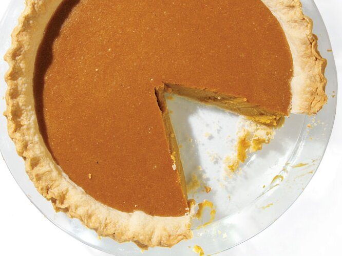

Writers tend to keep their thoughts in the realm of ideas rather than calculate the seemingly mundane matter of the mechanics of the trade. However, a few months ago I sat down in a Chinese restaurant with a friend of mine who writes for the New Yorker and we agreed to leave our narrative musings to the side and think about practicalities. We were going to try to figure out how much the printed word is worth in America today.
We wanted to calculate how many feature stories the top magazines in America assign every year, and how much they typically pay their writers for the assignments. The list was only going to be for the top publications in America–the ones that pay between $1.50-$5 per word and that comprise the top tier of journalism. These are the magazines that line the shelves of airport bookstores everywhere and the ones that we write for pretty regularly. Think The New Yorker, New York Times Magazine, Atlantic, Wired, Men’s Journal, Rolling Stone, Playboy, Vanity Fair, Mother Jones, O, The Atavist, and the dozen or so other magazines that sits on the tops of toilet tanks and the tables of dentist offices from Seattle to Orlando.
It was back of the envelope math at best, but as far as either one of us could determine, it was the first time anyone had tried to figure out how biG the pie was for long form freelance writing in America. There are hundreds of amazing writers in the country, delving into stories that drive the national conversation on everything from politics to the cult of celebrity to human rights abuses to cutting edge scientific and technological discoveries. These are the types of pieces that we make a living on, and ones that, frankly, we feel are important to write.
After ten minutes listing the average number of features in each magazine multiplied by the number of issues annually we had a number: 800. On average these stories would run at about 3000 words and pay $1.50 per word. It was only a ball-park estimate of the overall freelance writing market cap. But it was also a rather depressing one. Let me put this in bold so it stands out on the page.
The total market for long form journalism in major magazines in America is approximately $3.6 million. To put it another way: the collective body of writers earned less than Butch Jones, a relatively unknown college football coach, earned in a single year.
$3.6 million. That’s it. And the math gets even more depressing. If we assume that writers should earn the average middle class salary of $50,000 a year, then there’s only enough money in that pot to keep 72 writers fully employed. And, of course, those writers would have to pen approximately 11 well thought out and investigated features per year–something that both my friend and I knew was almost impossible.
Now, it could be that our estimate was a little low. But even if you double it–a number that is almost certainly far and above the size of the actual feature market, then we are collectively still barely scraping above $7 million paid out by magazines in word rates every year. According to Small Business Chronicle, the overall magazine publishing industry generates a total revenue of $35-40 billion a year. While that number includes lots of publications that are not in our sample, it does give at least some sense OF how small a slice of the pie writers actually earn.
Another way to figure out what the total publishing industry is worth is to check out the advertising rates that mainstream magazines publish on their websites. Take Wired, for example – not to pick on them, but because they are a representative of the some of the best journalism that exists in the country today. According to its media kit, a single page of advertising sells for $141,680. (And that’s not even the top of the market. A full page ad in GQ sells for more than $180,000). Multiply that by the number of full page ads in a single issue of Wired (about 30) and you get about $4.6 million in gross revenues per issue of the magazine.
Think about that for a second. A single issue of one major American magazine generates more gross revenue than what the entire magazine industry pays out in word rates over an entire year. If you figure that Wired spends about $30,000 on words in any given issue then a little more back of the envelope math says that words account for only 0.6% of the magazine’s revenue.
As a writer, this state of affairs horrifies me. I feel strongly that writers contribute more than just 0.6% of value to the overall magazine industry. Yes, magazines have a host of expenses–printing, distributing, editing, fact checking, office overhead and marketing all have a cost. But there is also something deeply sick in how little writers’ work is actually valued by the industry.
__
**Stealth edit after some very good criticism **
A lot of people have raised good points at how my numbers are probably low. See the comments on Romenesko’s blog, for some whip-smart critique. I’ll address them in a future post, but I do want to make one quick correction in relation to online advertising rates that really wasn’t properly addressed above.
Most magazines list an aspirational price in their media kit and then give steep discounts to advertisers. I’m a bit sorry to keep picking on them, but I happen to have the December issue of Wired on my desk right now and I just recounted the ads. It was a fatter book than usual. There were 87 full page ads as well as numerous foldouts and a back cover. At the full media kit rate that is about $15 million in gross revenue for that issue. But they probably gave huge discounts to their clients. Lets say it was of 50% per page. That’s $7.5 million in gross advertising revenue. There were 5 features which means a total word count of about 25,000. Include FOB and other stuff it probably comes out to 40,000 words (I’m being generous). At the standard word rate ($2) that would come out to approximately 1% of that issue’s revenue.
**Stealth Edit #2**
Many people have suggested that 800 features is too low low. Lets try to come up with a fairer number. Most consumer magazines (think Details, GQ, Rolling Stone, Atlantic etc) run 2-3 features an issue. The number used to be 4-5, but it went down in the recession. Can we agree then that the average magazine would run about 36 features a year? The New Yorker runs 3 features a week, NYTm about the same. They have 50 issues a year and that makes for 150 stories each year for these sorts of magazines. Lets say there are 4 magazines like this (I can’t think of who they would be). The other 20 magazines run 36 features a year. So we revise the number of features as 1,320 per year. The total payout for these stories would come to about $8 million. Now consider that the December issue of Wired alone brought in $7.5 million even after a steep advertiser discount. One issue of one magazine still can cover the almost the entire cost of all features in America in a given year.